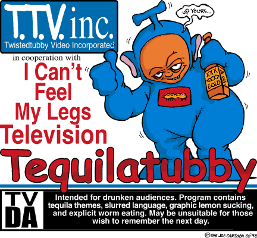

Compromized by [W F D] |
Brought to you by|^CyBeRpUnK^| and NightMan.
Enjoy this funny image first...

\.....now we are sure you all know what's the reason behind this defacement, yeah! Global Awareness!
pheer this ereet and heart rendering poetry, written and composed by Cyberpunk, against war.
Do not stop dreaming! A mind of peace There is nothing more valuable O dreamers of peace, come. I acquire peace, Why are you moving Man's soulful smile |
Some tear jerking FACTS!!!!!
7 Palestinians slaughtered.
08th December 2000,
BETHLEHEM, West Bank (AP) - Palestinians, marking the anniversary of their first uprising, threw rocks and fought gun battles with Israeli troops Friday. Seven Palestinians were butchered.
The bloody clashes Friday, the deadliest day of Israeli-Palestinian fighting since Nov. 21, dimmed prospects of a resumption of peace talks. A U.S.-led fact-finding commission is to arrive in the region Monday to look into the causes of the violence.
Palestinian activists had called for a "day of rage'' to mark the Dec. 8, 1987 start of the six-year uprising that led to a mutual recognition treaty between Israel and the Palestine Liberation Organization and paved the way for peace talks.
In the second uprising, which erupted Sept. 28, more than 300 Palestinian people have been killed.
"What happened today is a confirmation ... that the uprising is continuing,'' said Marwan Barghouti, head of Palestinian leader Yasser Arafat's Fatah movement in the West Bank. "The uprising is a strategic choice of the Palestinian people, and it can't be stopped. There will be an escalation in the coming days.''
Links to check out for the REAL truth:
http://www.hoffman-info.com/palestine.html
www.geocities.com/the_truth_20002000/truth3.swf
http://www.attrition.org/mirror/attrition/2000/12/07/www.volasia.com/
/Members of the [W F D] : m0r0n, B_Real, nightman, Brake^Off, sir0kill, hid30us, B1n4ry C0d3.
Zhoutz out to: Delay , hooyah, JohnA, GeXuS , Neon-Lenz, Doctor Nuker, Cyrus' , Gforce Pakistan, Scripter, Scurvy, Akurei, LaG, ScorpionKTX and Sofh (cyberpunk and nightman says:- thanks for supporting our cause pal).
copyright (c) 1999-2000 by |^CyBeRpUnK^| all rights reserved
CyberPunk touches his heart and says:- Susan I love you my princess!!
E-mail us if you want to support and help us in our cause :-